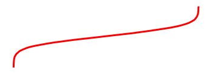

Special content blocks
Contents
Special content blocks¶
A common use of directives and roles is to designate “special blocks” of your content. This allows you to include more complex information such as warnings and notes, citations, and figures. This section covers a few common ones.
MyST syntax extensions¶
MyST Markdown has a base syntax that it supports, and additional syntax can be enabled to add extra functionality. By default, Jupyter Book enables a few extra syntax pieces for MyST in order to more closely resemble the Markdown experience in Jupyter Notebooks and interfaces. These extensions are:
dollarmathTo support
$$and$syntax for math blocks. See Math and equations.linkifyTo auto-detect HTML-like links in your markdown and convert them to hyperlinks.
substitutionTo allow you to define markdown “variables” and substitute text in using them. See Substitutions and variables in markdown.
colon_fenceTo allow you to use
:::fences for admonitions, in order to make them easier to render in interfaces that do not support MyST. See Markdown-friendly directives with :::.
To enable your own syntax extensions, use the following configuration pattern:
parse:
myst_enable_extensions:
- extension-1
- extension-2
Note that this will override the default Jupyter Book extension list. You should include all of the extensions that you want to be enabled.
See also
For a list of syntax extensions in MyST, see the MyST documentation.
Notes, warnings, and other admonitions¶
Let’s say you wish to highlight a particular block of text that exists slightly apart from the narrative of your page.
You can use the {note} directive for this.
For example, the following text:
```{note}
Here is a note!
```
Results in the following output:
Note
Here is a note!
There are a number of similarly-styled blocks of text. For example, here is a {warning}
block:
Warning
Here’s a warning! It was created with:
```{warning}
```
For a complete list of options, see the sphinx-book-theme documentation.
Blocks of text with custom titles¶
You can also choose the title of your message box by using the
{admonition} directive. For example, the following text:
```{admonition} Here's your admonition
Here's the admonition content
```
Results in the following output:
Here’s your admonition
Here’s the admonition content
If you’d like to style these blocks, then use the :class: option. For
example:
This admonition was styled…
Using the following pattern:
```{admonition} My title
:class: tip
My content
```
Markdown-friendly directives with :::¶
The admonition syntax above utilises the general directives syntax.
However, if you’re using an interface that does not support MyST Markdown, it will render as a raw literal block.
Many directives contain markdown inside, and if you’d like this markdown to render “normally”, you may also use ::: fences rather than ``` fences to define the directive. As a result, the contents of the directive will be rendered as markdown.
For example:
:::{note}
This text is **standard** _Markdown_
:::
Note
This text is standard Markdown
Similar to normal directives, these admonitions can also be nested:
::::{important}
:::{note}
This text is **standard** _Markdown_
:::
::::
Important
Note
This text is standard Markdown
Note
You can use this syntax for any kind of directive, though it is generally recommended to use only with directives that contain pure markdown in their content.
Insert code cell outputs into admonitions¶
If you’d like to insert the outputs of running code inside admonition
blocks, we recommend using glue functionality.
For example, we’ll insert one of the outputs that was glued into the book from the code outputs page.
The code below:
```{note}
Here's my figure:
{glue:figure}`sorted_means_fig`
```
generates:
Note
Here’s my figure: 
See Store code outputs and insert into content for more information on how to use glue to insert your outputs directly into your content.
Tip
To hide code input and output that generated the variable you are inserting, use the remove_cell tag.
See Hide or remove content for more information and other tag options.
HTML admonitions¶
A drawback of admonition syntax is that it will not render in interfaces that do not support this syntax (e.g., GitHub). If you’d like to use admonitions that are defined purely with HTML, MyST can parse them via the html_admonitions extension. To use it, first enable it with the following configuration:
parse:
myst_enable_extensions:
# don't forget to list any other extensions you want enabled,
# including those that are enabled by default!
- html_admonition
Then, you may define admonitions in your book like so:
<div class="admonition note" name="html-admonition" style="background: lightgreen; padding: 10px">
<p class="title">This is the **title**</p>
This is the *content*
</div>
This is the title
This is the content
See HTML Admonitions for more information about HTML admonitions.
Do not embed headings inside admonitions¶
You should not embed headings (lines starting with #) inside of admonitions, dropdowns, or other content blocks such as this.
Sphinx (and thus Jupyter Book) uses headings to define the major top-level sections of a document.
For this reason, nesting a heading within a block will cause unpredictable breakage of the document structure.
Do not do this
For example, do not do this:
```{note}
## This heading is inside an admonition, and will mess things up!
Don't do this!
```
To achieve a similar effect, write some bold text instead of using a markdown header.
Panels¶
Panels provide an easy way for you to organize chunks of content into flexible containers on your page. They are useful for creating card-like layouts, flexible columns, and grids. Panels are based off of Bootstrap CSS, and utilize Bootstrap’s classes to control the look and feel of panels.
Here is an example that creates two panels:
````{panels}
Panel header 1
^^^
Panel body 1
+++
Panel footer 1
---
Panel header 2
^^^
Panel body 2
+++
Panel footer 2
````
---separates each panel^^^defines the panel header+++defines the panel footer
Note
Panel headers and footers are optional.
If you don’t include ^^^ or +++ in your panel, they will not show up.
You can embed all kinds of content inside of panels. For example, the following panels:
Content of the left panel.
example-badge
were created with:
````{panels}
Content of the left panel.
{badge}`example-badge,badge-primary`
---
```{link-button} content/panels
:text: Clickable right panel
:type: ref
:classes: stretched-link
```
````
See also
See the Sphinx Panels card layout documentation for more information.
Controlling the look and feel of panels¶
You can control the look and feel of panels by passing attaching bootstrap classes to panel headers/body/footers.
You do this by passing configuration options to your {panels} directive.
For example:
See also
See the Panels card styling documentation for more information.
For example, you can control how many columns are in your panels by using Bootstrap column classes. These panels:
Header A
Body A
Header B
Body B
Header C
Body C
Were created by this code:
````{panels}
:column: col-4
:card: border-2
Header A
^^^
Body A
---
Header B
^^^
Body B
---
Header C
^^^
Body C
````
Dropdowns¶
Dropdowns allows you to hide content behind a title and a button. There are two kinds of dropdowns in Jupyter Book:
The {dropdown} directive¶
Use the {dropdown} directive to create a clickable dropdown with a title.
For example:
source
```{dropdown} Here's my dropdown
And here's my dropdown content
```
result
Here’s my dropdown
And here’s my dropdown content
Dropdown admonitions¶
You can also hide the body of your admonition blocks so that users must click a button to reveal their content. This is helpful if you’d like to include some text that isn’t immediately visible to the user.
To turn an admonition into a dropdown, add the dropdown class to them. For example:
source
```{note}
:class: dropdown
The note body will be hidden!
```
result
Note
The note body will be hidden!
You can use this in conjunction with {admonition} directives to include your
own titles and stylings. For example:
source
:::{admonition} Click here!
:class: tip, dropdown
Here's what's inside!
:::
result
Click here!
Here’s what’s inside!
Important
Admonition dropdowns require JavaScript to be enabled on the browser which they are viewed. By contrast, the dropdown directive below works purely via HTML+CSS.
Definition lists¶
Definition lists are enabled by defining the following setting in your _config.yml:
parse:
myst_enable_extensions:
# don't forget to list any other extensions you want enabled,
# including those that are enabled by default!
- deflist
Definition lists utilise the markdown-it-py deflist plugin, which itself is based on the Pandoc definition list specification.
Here’s an example:
source
Term 1
: Definition
Term 2
: Definition
result
- Term 1
Definition
- Term 2
Definition
From the Pandoc documentation:
Each term must fit on one line, which may optionally be followed by a blank line, and must be followed by one or more definitions. A definition begins with a colon or tilde, which may be indented one or two spaces.
A term may have multiple definitions, and each definition may consist of one or more block elements (paragraphs, code blocks, lists, etc.)
Here is a more complex example, demonstrating some of these features:
- Term with Markdown
Definition with reference
A second paragraph
A second definition
- Term 2
Definition 2a
Definition 2b
- Term 3
A code block
A quote
A final definition, that can even include images:

This was created with the following Markdown:
Term *with Markdown*
: Definition [with reference](ontent/definition-lists)
A second paragraph
Term 2
~ Definition 2a
~ Definition 2b
Term 3
: A code block
: > A quote
: A final definition, that can even include images:
<img src="../images/fun-fish.png" alt="fishy" width="200px">
Quotations and epigraphs¶
Quotations and epigraphs provide ways to highlight information given by others.
Quotations¶
Regular quotations are controlled with standard Markdown syntax, i.e., by
inserting a caret (>) symbol in front of one or more lines of text. For example:
source
> Here is a cool quotation.
>
> From me, Jo the Jovyan
result
Here is a cool quotation.
From me, Jo the Jovyan
Epigraphs¶
Epigraphs draw more attention to a quote and highlight its author. You should keep these relatively short so that they don’t take up too much vertical space. Here’s how an epigraph looks:
source
```{epigraph}
Here is a cool quotation.
From me, Jo the Jovyan
```
result
Here is a cool quotation.
From me, Jo the Jovyan
You can provide an attribution to an epigraph by adding -- to the final line, followed by the quote author. For example:
source
```{epigraph}
Here is a cool quotation.
-- Jo the Jovyan
```
result
Here is a cool quotation.
—Jo the Jovyan
Glossaries¶
Glossaries allow you to define terms in a glossary so you can then link back to it throughout your content. You can create a glossary with the following syntax:
```{glossary}
Term one
An indented explanation of term 1
A second term
An indented explanation of term2
```
which creates:
To reference terms in your glossary, use the {term} role. For example,
{term}`Term one` becomes Term one and {term}`A second term`
becomes A second term.
Note
Glossary terms are automatically added to your book’s index page.
Indexes¶
Indexes allow you to define index items (terms, phrases, keywords, etc) that are collected in a single page, with links back to their location in your content. This is called the General Index.
When you build your book, a general index page will automatically be generated.
Reference your general index¶
To create a reference / link to your general index, use the genindex keyword.
For example:
{ref}`using a ref role <genindex>`: using a ref role[using markdown link syntax](genindex): using markdown link syntax[](genindex): Index (to demonstrate the title of the general index)
The {index} directive¶
You can add items to your general index with the {index} directive.
It has the following syntax:
```{index} Entry name
```
This will not insert anything into your final page’s content, but will add a link to this section in your general index. For example, we’ve added the following index directive below:
```{index} index directive
```
You can find this term in the index.
Add a label to your {index} directive¶
You can customize the name for an index entry by setting the :name: parameter.
For example:
```{index} Index names
:name: index-names
```
You can then reference this index in your book. For example:
{ref}`See index names <index-names>`: See index names[See index names](index-names): See index names
Create more complex index entries¶
The Sphinx Index-generating markup page describes the full range of indexing possibilites.
This includes the ability to construct nested headings using the ; separator to represent a change in index level:
```{index} single: Jupyter Book ; installation
```
Multiple index entry terms can be created from a single reference.
For example, we can create entries references ; index terms and index terms ; references from the following entry:
```{index} double: references ; index terms
```
Readers can be directed towards alternative index terms within the index itself by using see or seealso, as in the following example which adds an entry for citations to also refer to bibliographies:
```{index} seealso: citations ; bibliographies
```
Create index entries with other extensions¶
You can also create index entries through the use of other Sphinx extensions. For example, any term you define in a Glossary will also be inserted into the index.
Add the general index to your table of contents¶
To add your general index to your book’s table of contents, take the following steps:
Create a file in the root of your book called
genindex.md.It must have a title but the rest can be blank. The title will actually be replaced with
Indexwhen your book is built, but it is needed in your source file to avoid errors.Add an entry for this page in your table of contents. For example:
format: jb-book root: index chapters: - file: path/to/chapter1 - file: path/to/chapter2 - file: genindex
Tabbed content¶
You can also use sphinx-panels to produce tabbed content.
This allows you to display a variety of tabbed content blocks that users can click on.
For example, here’s a group of tabs showing off code in a few different languages:
int main(const int argc, const char **argv) {
return 0;
}
def main():
return
class Main {
public static void main(String[] args) {
}
}
function main()
end
PROGRAM main
END PROGRAM main
You can use this functionality with the {tabbed} directive. You can provide a sequence of {tabbed} directives, and each one will be used to generate a new tab (unless the :new-group: option is added to a {tabbed} directive.)
For example, the following code:
```{tabbed} Tab 1 title
My first tab
```
```{tabbed} Tab 2 title
My second tab with `some code`!
```
produces
My first tab
My second tab with some code!
Insert code outputs in your tabs with the glue functionality.
For example, the following tabs use this functionality to glue images and tables generated somewhere else in these docs:
Fig. 1 This is a caption, with an embedded {glue:text} element: 3.00!¶
| first | second | third | |
|---|---|---|---|
| 0 | 2.746361 | 3.043929 | 3.202403 |
| 1 | 2.789850 | 3.011028 | 2.957421 |
| 2 | 3.152236 | 2.913354 | 2.933449 |
| 3 | 3.132624 | 2.826694 | 2.791936 |
| 4 | 2.928446 | 3.196804 | 3.236716 |
Fig. 2 A caption for a pandas table.¶
````{tabbed} A histogram
```{glue:figure} boot_fig
:figwidth: 300px
:name: "fig-boot-tab"
This is a **caption**, with an embedded `{glue:text}` element: {glue:text}`boot_mean:.2f`!
```
````
````{tabbed} A table
```{glue:figure} df_tbl
:figwidth: 300px
:name: "tbl:df-tab"
A caption for a pandas table.
```
````
````{tabbed} Code to generate this
`{ code block here }`
````
See the sphinx-panels tabbed documentation for more information on how to use this.
Substitutions and variables in markdown¶
Substitutions allow you to define variables in the front-matter of your page, and then insert those variables into your content throughout.
To use a substitution, first add front-matter content to the top of a page like so:
---
substitutions:
key1: "I'm a **substitution**"
key2: |
```{note}
{{ key1 }}
```
fishy: |
```{image} img/fun-fish.png
:alt: fishy
:width: 200px
```
---
You can use these substitutions inline or as blocks, and you can even nest substitutions in other substitutions (but circular references are prohibited):
Inline: {{ key1 }}
Block level:
{{ key2 }}
Inline: I’m a substitution
Block level:
Note
I’m a substitution
You can also insert substitutions inside of other markdown structures like tables:
| col1 | col2 |
| -------- | --------- |
| {{key2}} | {{fishy}} |
col1 |
col2 |
|---|---|
Note I’m a substitution |
|
See also
For more information about Substitutions, see Substitutions (with Jinja2).
Define substitutions for your whole book¶
You can also define book-level substitution variables with the following configuration:
parse:
myst_substitutions:
key: value
These substitutions will be available throughout your book. For example, the global substitution key my-global-substitution is defined in this book’s _config.yml file, and it produces: My global value!.
Formatting substitutions¶
MyST substitutions use Jinja templates in order to substite in key / values. This means that you can apply any standard Jinja formatting to your substitutions. For example, you can replace text in your substitutions like so:
The original key1: {{ key1 }}
{{ key1 | replace("a substitution", "the best substitution")}}
The original key1: I’m a substitution
I’m the best substitution
Using substitutions in links¶
If you’d like to use substitutions to insert and modify links in your book, here are two options to explore:
Define the entire markdown link as a variable. For example:
substitutions: repo_url: [my repo url](https://github.com/executablebooks/jupyter-book)
Here's my link: {{ repo_url }}Here’s my link: my repo url
Use Jinja features to insert the variable. Because substitutions use Jinja templates, you also have access to Python formatting operations in your substitution. For example:
substitutions: repo_name: jupyter-book
Here's my link: {{ '[my repo: `{repo}`](https://github.com/executablebooks/{repo})'.format(repo=repo_name) }}Here’s my link: my repo:
jupyter-book
Citations and cross-references¶
You can add citations and cross-references to your book. See Citations and bibliographies for more information on how to do this.
Figures¶
You can thoroughly customise the look of figures in your book. See Images and figures for more information.
Page layout and sidebar content¶
You can also use MyST to control various aspects of the page layout. For more information on this, see Control the page layout.
Footnotes¶
You can include footnotes in your book using standard Markdown syntax. This will include a numbered reference to the footnote in-line, and append the footnote to a list of footnotes at the bottom of the page.
To create a footnote, first insert a reference in-line with this syntax: [^mylabel].
Then, define the text for that label like so:
[^mylabel]: My footnote text.
You can define [^mylabel] anywhere in the page, though its definition will always
be placed at the bottom of your built page. For example, here’s a footnote 1
and here’s another one 2. You can click either of them to see the footnotes
at the bottom of this page.
Custom <div> blocks¶
You can add custom div blocks along with whatever classes you’d like using
the {div} directive. The {div} directive will wrap everything inside in a single <div> with the classes you provide. For example:
```{div} my-class
**Some content.**
```
Will result in the following HTML when your book is built:
<div class="my-class">
<strong>Some content.</strong>
</div>
This can be useful if you’d like to style your book with custom CSS or JavaScript.
- 1
Here’s the text of my first note.
- 2
And the text of my second note. Note that you can include Markdown footnote definitions.